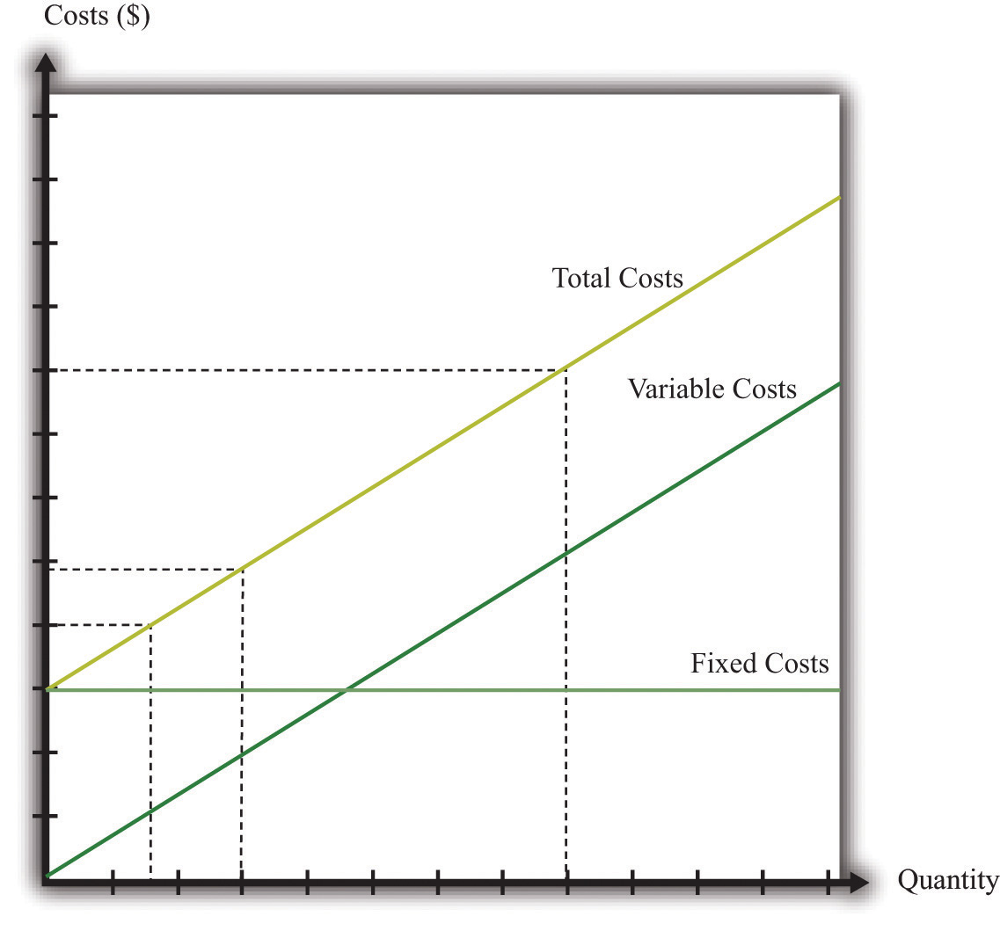

So far we have been thinking about a firm simply changing the number of labor hours that it wants to plug into its technology. Such job creation and destruction takes place at individual firms all the time. Some firms see an increase in productivity and hire more workers. Other firms see reduced demand for their output and destroy existing jobs. The joint creation and destruction of jobs underlies the net job creation we displayed earlier in Figure 9.3 "US Net Job Creation from 2000 to 2009".
Yet the expansion and contraction of employment in existing plants is only one source of job creation and destruction. During an economic downturn, such as the severe recession that began in 2008, some firms closed factories, and other firms went completely out of business. For example, US automobile manufacturers, such as General Motors, responded to the decreased demand for cars by closing some of their existing manufacturing plants. This led to job destruction at these plants. At other times, when an economy is expanding, new firms enter into business and existing ones open new plants. Thus a complete picture of the job creation and destruction process requires us to understand the economics of entry and exit.
Only when the firm’s managers know how much the firm is going to produce, the price at which it will sell it, and the cost of producing that output can they figure out profits and decide whether it is sensible to be in business at all. This logic applies to both managers of firms that are already in business and entrepreneurs who are considering starting a business. Firms also apply this logic to parts of their operations—for example, a firm may want to decide whether to shut down an existing plant or open a new one.
If a firm that is already in business discovers that its profits are too small to justify its other costs, then it should exit the market, shutting down its operations completely. If an entrepreneur is contemplating starting a new firm and calculates that the profits it will earn justify the costs of setting up operations, then we say that a firm enters the market.
In the previous section, we explained how job creation and destruction take place as firms expand and contract. When Walmart comes to town, however, much more is going on. The opening of a new Walmart means that some new jobs are created. Against that, existing stores may be forced to close down completely. Now that we have looked at a firm’s price and output decisions, we are able to analyze entry and exit decisions.
Businesses do not stay around forever. At some point, they exit the market, destroying jobs in the process. Restaurants that were a big hit only a few years ago can quickly lose their luster and disappear from the scene. The same is true for many retail outlets. Manufacturing plants also close, taking jobs with them. Imagine, for example, that you own a small clothes retailing store. Then Walmart comes to your town. Now your customers have another place to buy their clothes, and you must decide whether to stay in business. You need to decide which is more profitable: staying in business or closing your business down and selling off any assets you possess.
To understand the factors influencing firm exit, we begin with a key distinction between different kinds of costs.
Toolkit: Section 31.14 "Costs of Production"
Costs that are the same at all levels of production are called fixed costs. Costs that vary with the level of production are called variable costs. As an accounting identity, the total costs of a firm are divided up as follows:
total costs = fixed costs + variable costs.Table 9.3 "Monthly Costs of Production" shows an example of fixed costsCosts that are the same at all levels of production., variable costsCosts that vary with the level of production., and total costsThe sum of fixed costs and variable costs. for your store. (To keep life simple, we treat all the different kinds of clothing you sell as if they were the same. Let us call them blue jeans.) The numbers in Table 9.3 "Monthly Costs of Production" are based on the following equation for costs:
total costs = 14,000 + 10 × quantity.Suppose your firm has fixed costs every month of $14,000. By definition, these fixed costs do not change as your level of output changes. Think of these as your overhead costs—for example, the cost of renting your retail space, utility bills, the wage of your sales clerk, and so on.
Table 9.3 Monthly Costs of Production
| Quantity | Fixed Costs ($) | Variable Costs ($) | Total Costs ($) |
|---|---|---|---|
| 0 | 14,000 | 0 | 14,000 |
| 1 | 14,000 | 10 | 14,010 |
| 2 | 14,000 | 20 | 14,020 |
| … | … | … | … |
| 200 | 14,000 | 2,000 | 16,000 |
| 400 | 14,000 | 4,000 | 18,000 |
| 600 | 14,000 | 6,000 | 20,000 |
| 800 | 14,000 | 8,000 | 22,000 |
| 1,000 | 14,000 | 10,000 | 24,000 |
| 1,200 | 14,000 | 12,000 | 26,000 |
| 1,400 | 14,000 | 14,000 | 28,000 |
| 1,600 | 14,000 | 16,000 | 30,000 |
| 1,800 | 14,000 | 18,000 | 32,000 |
| 2,000 | 14,000 | 20,000 | 34,000 |
| 2,200 | 14,000 | 22,000 | 36,000 |
| 2,400 | 14,000 | 24,000 | 38,000 |
By contrast, variable costs increase as the level of output increases. In this example, if output increases by one, variable costs increase by $10. You can think of this as the cost of purchasing your blue jeans from the wholesaler. For you, the cost of “producing”—that is, making available for sale—one more unit of output is $10. Figure 9.15 "Total Costs, Fixed Costs, and Variable Costs" graphs the data from this table. Notice that even if your firm produces no output at all, it still incurs fixed costs.
Figure 9.15 Total Costs, Fixed Costs, and Variable Costs
Fixed costs are the same at all levels of output. Variable costs increase as the quantity of output increases. Total costs equal fixed costs plus variable costs.
We are now ready to study the decision to continue in business or exit. You need to compare your revenues, defined as price times quantity, with the cost of running your business. Profit is the difference between revenues and costs, so
profit = total revenues − total costs = total revenues − variable costs − fixed costs.Table 9.4 Demand and Profit before Walmart Comes to Town
| Quantity | Price ($) | Total Revenues ($) | Variable Costs ($) | Fixed Costs ($) | Profits ($) |
|---|---|---|---|---|---|
| 0 | 30 | 0 | 0 | 14,000 | –14,000 |
| 200 | 29 | 5,800 | 2,000 | 14,000 | –10,200 |
| 400 | 28 | 11,200 | 4,000 | 14,000 | –6,800 |
| 600 | 27 | 16,200 | 6,000 | 14,000 | –3,800 |
| 800 | 26 | 20,800 | 8,000 | 14,000 | –1,200 |
| 1,000 | 25 | 25,000 | 10,000 | 14,000 | 1,000 |
| 1,200 | 24 | 28,800 | 12,000 | 14,000 | 2,800 |
| 1,400 | 23 | 32,200 | 14,000 | 14,000 | 4,200 |
| 1,600 | 22 | 35,200 | 16,000 | 14,000 | 5,200 |
| 1,800 | 21 | 37,800 | 18,000 | 14,000 | 5,800 |
| 2,000 | 20 | 40,000 | 20,000 | 14,000 | 6,000 |
| 2,200 | 19 | 41,800 | 22,000 | 14,000 | 5,800 |
| 2,400 | 18 | 42,550 | 24,000 | 14,000 | 5,200 |
The demand for your blue jeans is shown in the first two columns of Table 9.4 "Demand and Profit before Walmart Comes to Town". Looking at this table, your profit is at its highest when you set a price at $20 and sell 2,000 pairs of jeans. In this case, you earn $6,000 per month. Your revenues are enough to cover your variable costs and your fixed operating costsCosts incurred regularly during the normal operation of a business..
After Walmart comes to town, the demand for your jeans shifts inward because shoppers start going to Walmart instead. Now your demand is as shown in Table 9.5 "Demand and Profit after Walmart Comes to Town".
Table 9.5 Demand and Profit after Walmart Comes to Town
| Quantity | Price ($) | Revenues ($) | Variable Costs ($) | Fixed Costs ($) | Profit ($) |
|---|---|---|---|---|---|
| 0 | 26 | 0 | 0 | 14,000 | –14,000 |
| 200 | 25 | 5,000 | 2,000 | 14,000 | –11,000 |
| 400 | 24 | 9,600 | 4,000 | 14,000 | –8,400 |
| 600 | 23 | 13,800 | 6,000 | 14,000 | –6,200 |
| 800 | 22 | 17,600 | 8,000 | 14,000 | –4,400 |
| 1,000 | 21 | 21,000 | 10,000 | 14,000 | –3,000 |
| 1,200 | 20 | 24,000 | 12,000 | 14,000 | –2,000 |
| 1,400 | 19 | 26,600 | 14,000 | 14,000 | –1,400 |
| 1,600 | 18 | 28,800 | 16,000 | 14,000 | –1,200 |
| 1,800 | 17 | 30,600 | 18,000 | 14,000 | –1,400 |
| 2,000 | 16 | 32,000 | 20,000 | 14,000 | –2,000 |
| 2,200 | 15 | 33,000 | 22,000 | 14,000 | –3,000 |
| 2,400 | 14 | 33,600 | 24,000 | 14,000 | –4,400 |
In response to this decrease in demand, you should drop your price. Your profits are now maximized at $18. Unfortunately, at this price, you don’t earn enough to cover your fixed costs. Your profits are –$1,200 a month. Should you remain in business? The answer to this question depends on when you ask.
Suppose you ask this question just after you have paid your monthly fixed operating costs. During the course of a month, you should stay in business because you are earning enough revenues to cover your variable costs. As soon as it is time to pay your monthly fixed cost again, though, you should choose to exit and close down your store. In this case, you would engage in job destruction by firing your sales clerk.
In this simple example, it is easy to see exactly when and why you should exit. A more general rule for when to exit is as follows. You should exit if
discounted present value of expected future profits < value of recoverable assets.To make sense of this rule, we need to look at each part of it in turn.
Expected future profits. Even though your price has decreased this month, it might not stay low forever. Perhaps your customers will decide, after they have tried Walmart, that they prefer your store after all. It would then be foolish to close down your store immediately just because you fail to cover fixed costs in one month. This means you must make a decision in the presence of uncertainty: you don’t know for sure if your customers will come back, and if they do, you don’t know for sure that they will not go away again. As a simple example, suppose you think there is a 75 percent chance that the shift in your demand curve is permanent and a 25 percent chance that it will go back to its original position. Looking ahead and using the tool of expected value, you would calculate your expected profit as follows:
In this case, you still expect to make a small profit every month. Provided you were not too risk-averse, you would keep your store in business. Of course, after some months had gone by, you would probably have better information about whether your customers are truly coming back or not.
Toolkit: Section 31.4 "Choices over Time", and Section 31.7 "Expected Value"
You can review the meaning and calculation of discounted present value, expected value, and risk-aversion in the toolkit.
Our definition of fixed costs seems very straightforward. Unfortunately, it is not always easy to decide in practice whether a cost is fixed or variable. There are two main reasons for this:
In fact, if we take a very long time horizon and very large ranges of output, there are few costs that are truly fixed.
We use very similar reasoning to think about a firm’s decision to enter a market. When Walmart’s senior management team contemplates opening a new store, they compare the costs of entry against the (discounted present value of the) profit they expect to earn once they enter.
What are some of Walmart’s costs when it wants to open a new store?
You can probably think of many more. We call these Walmart’s entry costsThe one-time fixed costs that a firm must incur when establishing a business..
Toolkit: Section 31.14 "Costs of Production"
Entry costs are the one-time fixed costs that a firm incurs when establishing a business. The toolkit has more discussion of other kinds of costs.
Such costs of establishing a business can be very substantial. Notice, by the way, that entry costs are for the most part truly fixed costs. Walmart must incur these costs before it can let a single customer inside; these costs are fixed no matter how long the time horizon; these costs are largely independent of Walmart’s scale of operation.
The senior management team must also predict how much profit they expect the store to make. These forecasts are based on the idea that, once the store is opened, the store will set its prices and manage its operations to maximize its profits. Because the team will be uncertain about profits, they will need to use expected value calculations. They will also be counting on a profit flow for years if not decades and will need to use discounted present value calculations. Thus the appropriate decision rule for a firm is to enter ifIn Chapter 15 "Busting Up Monopolies", you will find an example of very similar economic reasoning. There we present a parallel rule for the situation where a firm is deciding whether or not to engage in innovation.
discounted present value of expected future profits > entry costs.A firm is more likely to enter if
Firms that enter markets know that it is possible that they will exit again in the future. Because their profit flow is uncertain, they recognize that there may come a point where they will judge it better to close down their operations. If they close down their operations, they may be able to sell off some of their existing assets. Therefore, when deciding to enter, managers also take into account the extent to which their assets are recoverable. If they are likely to be able to reclaim most of the value of their assets, then entry is more likely to be profitable even if demand turns out to be lower than expected.
Specifically, we can divide entry costs into sunk costsA cost that, once incurred, cannot be recovered. and recoverable costsA cost that, once incurred, can be recovered..
Toolkit: Section 31.14 "Costs of Production"
A sunk cost is a cost that, once incurred, cannot be recovered. A recoverable cost is a cost that, once incurred, can be recovered.
Looking back at our list of Walmart’s entry costs, we can see that many of these costs are sunk costs. All the planning and legal fees are completely tied to this store; if they end up not building the store, they cannot get any of the monies back. The building is a sunk cost as well. Other costs are at least partly recoverable. If they decide not to build the store, they can resell the land. If they have equipped the building with shelving and cash registers and then decide not to open the store, they can resell these assets or move them to another Walmart store instead.
Economic reasoning gives clear instructions about sunk costs: they should be irrelevant for any future decision. Whether it was a good or bad idea to build a store, any decisions made going forward should take into account only the future profitability of the store. For example, suppose that Walmart’s entry costs were $100 million, of which $30 million were recoverable. Suppose also that Walmart’s managers estimated the discounted present value of expected profits at $120 million and therefore decided to build the store. However, once it was built, they discover that they have badly overestimated demand. The managers revise their estimate of future profits by half to $60 million. They now regret having built the store; it was a bad investment. But they should still keep the store open because it is earning more than they could obtain by closing the store and selling its assets.
Even though the economic principle is clear, people frequently include sunk costs in their calculations instead of ignoring them. This is such a pervasive problem that it is given the name the sunk cost fallacyThe mistake of including sunk costs in future-looking decisions, even though they should properly be ignored..
Toolkit: Section 31.14 "Costs of Production"
The sunk cost fallacy is the mistake of including sunk costs in future-looking decisions, even though they should properly be ignored.